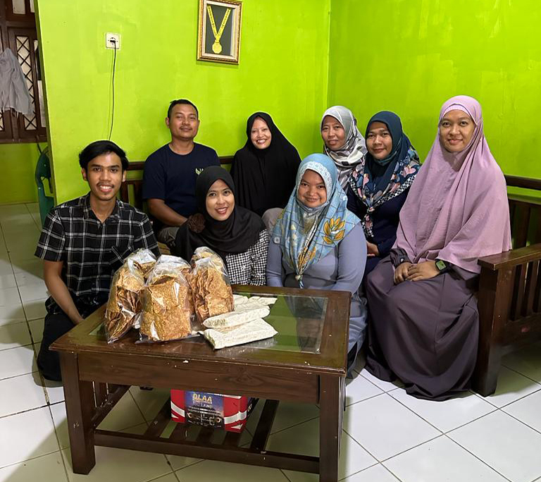
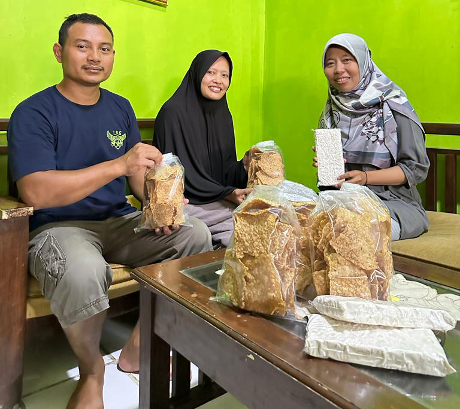
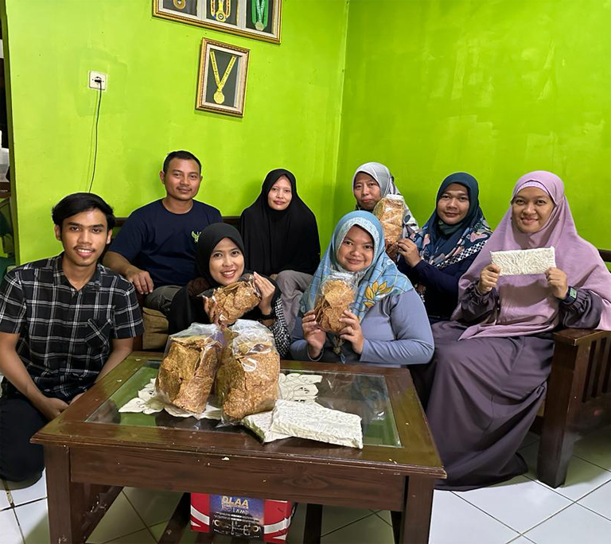

Tempe adalah makanan yang sehat dan bergizi tinggi. Terbuat dari bahan kacang kedelai (Soybean), yaitu sejenis legum atau kacang-kacangan yang menjadi salah satu makanan paling populer di dunia. Tanaman yang kemungkinan berasal dari Asia Timur ini sudah dibudidayakan 3500 tahun yang lalu. Kedelai menawarkan banyak manfaat kesehatan bagi orang yang mengkonsumsinya, termasuk meningkatkan metabolisme, melindungi kesehatan jantung, meningkatkan berat badan yang sehat, menjaga kesehatan tulang dan manfaat lainnya.
Makanan lezat seperti tahu, tempe, kecap, tauco, minyak dan susu kedelai merupakan produk olahan yang terbuat dari kacang kedelai ini. Dapat dikatakan bahwa diantara keluarga sayuran lainnya, kedelai merupakan makanan yang paling banyak mengandung protein nabati
Keripik tempe adalah salah satu jenis olahan dari tempe. Hasil olahan tersebut dicampur dengan rempah pilihan yang digoreng tipis sehingga teksturnya tetap renyah. Keripik tempe Mama Fadel memiliki varian ORIGINAL dan rasa DAUN JERUK. Keripik tempe ini dapat dinikmati oleh semua kalangan dan dapat menjadi CEMILAN ENAK untuk SEGALA SUASANA.
Toko kami menjual 2 varian rasa Keripik Tempe dan Tempe Mentah

Harga
Rp 35.000 / 500 gram
Rp 20.000 / 250 gram
Kemasan dalam bentuk plastik
Note: Harga dapat berubah sewaktu-waktu
- Pengantaran langsung sekitar perum 3 & Durenjaya Bekasi Timur, Kota Bekasi, minimal pemesanan 2 kg
- Pengantaran via Gojek/Grab
Pemesanan bisa menghubungi Mama Fadel langsung melalui menu Kontak yang berada di Website.
Jl Pulau Madura 6 nomor 9 RT 003 RW 011, Kelurahan Arenjaya Kecamatan Bekasi Timur, 17111